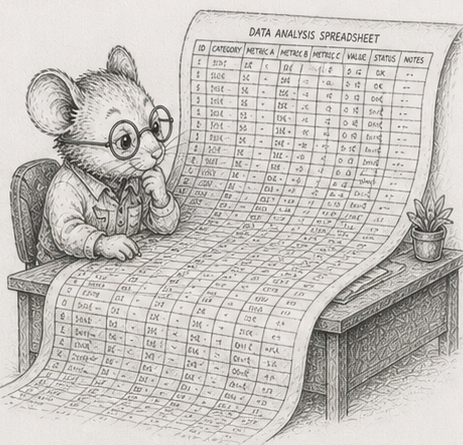

54 - A spreadsheet is a dependency graph

§53 ended where the tree did: in a hierarchy, “everything beneath a node” is one packed slice, because each thing has exactly one parent. Take that away - let one thing feed many - and you have a spreadsheet.
Here is a tiny one. Two inputs and three formulas:
A1 = 2 (an input you type)
A2 = 3 (an input you type)
B1 = A1 * A2 = 6
B2 = B1 + A1 = 8
T = B1 + B2 = 14
Draw who-reads-whom and it is not a tree: A1 feeds both B1 and B2, B1 feeds both B2 and T. It is a graph - a dependency graph. Now edit A1 from 2 to 10. What has to be recomputed?
A1 changed
B1 uses A1 -> stale
B2 uses B1 and A1 -> stale
T uses B1 and B2 -> stale
A2 uses nothing that changed -> still correct
Three of the four formulas go stale. Not because they sit “below” A1 in some layout - there is no below in a graph - but because the change reaches them along the feeds-into edges. That reachable set is the cone of the edit. And you must recompute it in the right order: B1 before B2 before T, because each needs the fresh value of the ones it reads. Recomputing a spreadsheet is exactly that - sorting the cells so every cell comes after the ones it depends on, then computing them in that order. (§14 called this a topological sort and said the program is one; a recalc engine is that sentence made literal.)
So the move from §53 survives: recompute only the stale part. But “the stale part” is no longer a slice you point at. It is a cone you compute.
The change has a shape the UI gives you
§53 could scatter dirt anywhere across the tree. A spreadsheet cannot. The only edits a person can make are a single cell, or a fill-down - drag a formula down a contiguous run of cells. So the dirty set is never random; it is the cone of one of those edits, and its size is set by how the formulas are wired, not by chance.
That is what to sweep: a fill-down of k cells, a real action, growing the cone. The result is the familiar shape - recomputing the cone wins big when k is small and shrinks as the fill-down covers more of the sheet, until near “most of it” the plain full recompute takes over. Measured on a 200,000 by 50 sheet, recomputing the cone runs about 1680x faster than a full recompute at a ten-cell fill-down, 50x at twenty thousand, and converges to the full recompute (1.08x) once the fill-down covers the whole sheet.1 Same crossover as the scenegraph, driven this time by how much you actually edited. (A uniform fill-down vectorises per column, so both sides are numpy here - the win is doing less work, not leaving the interpreter.)
“Incremental” does not make a sum incremental
The cone hides a twist, and it is the most useful thing in the chapter. Add one ordinary feature, a column total =SUM(B1:B1000000), and edit one cell in that column.
The cone is tiny: the one cell, the total, and whatever reads the total. Recomputing it should be almost free, but recomputing the total means reading the entire column again, because a sum keeps no memory of its old value - one changed cell forces a million additions. Measured, recomputing the sum after editing one cell costs the same as recomputing it after editing a hundred thousand: about 0.16 ms either way, because both re-read the whole column.2 The cone was small in count and fixed in work.
This is why “just recompute what changed” is not the end of the story for aggregates. A real engine either keeps the sum up to date by hand as cells change (add the new value, subtract the old - and watch §55 for why that is dangerous), or it accepts the re-scan and makes the re-scan cheap (the streaming patch at the end of this chapter). Either way: an aggregate is not incremental just because you only touched one input. A cone can be cheap to find and expensive to pay.
Early cutoff: do not push a change that did not happen
The sharpest version replaces the sum with a MAX. Suppose the formula downstream is a MAX over a column, feeding a dashboard of a hundred thousand cells that each read that maximum, and you edit a cell that is not the maximum, to a value still below it.
Walk the cone the obvious way and you recompute the MAX, find it feeds the dashboard, and recompute all hundred thousand dashboard cells. But the MAX did not change - you edited a number below it. None of the dashboard needed touching. So add one check: when you recompute a cell, if its new value equals its old value, stop - do not mark its dependents stale, because nothing reached them.
Measured on exactly that sheet, recomputing the dashboard cell by cell - as a recalc engine must, since each is its own formula - the obvious cone takes about 11 ms; with the cutoff it takes 3 microseconds, about 4000x faster.3 The gap is far larger than the Rust edition’s 54x, and for a Python-specific reason: the saved work is a hundred thousand per-cell recomputes, which is exactly the interpreter-bound loop the trunk warns about, so not doing it saves the most expensive thing in the language. The principle has a name worth keeping: validation is cheaper than recomputation. Checking “did this actually change?” costs almost nothing; recomputing everything downstream on the assumption that it did costs everything.
At a billion cells, the program goes flat
A million cells is small. A billion is where this gets honest, and it forces a change that is itself the lesson.
The natural way to hold a formula is as a little object of its own (it is a §52 expression, after all), one per cell. A representative per-cell formula object in Python - a tuple naming an operator and two cell references - is about 172 bytes. At a billion cells that is roughly 170 GB of formula objects before a single value, more than the Rust edition’s 160 GB because Python objects carry more overhead - it cannot be built. So you do what a real big sheet already is: you notice that a billion cells are not a billion different formulas. They are a handful of formulas stamped across huge ranges - a fill-down is one formula, repeated. Store the formula once per column - a template - and the cells become plain numpy columns of numbers. A billion-cell sheet’s entire “program” is then a few hundred templates, about 50 KB.4
That is the arc’s whole thesis turning up one level higher than expected. §52 flattened the data; at scale you flatten the program too - the formula graph collapses from an object-per-cell into a template-per-column, and the dependency graph from a stored list of edges into an implicit rule (“this column reads that one, row by row”). Columns are the default for the program, not just the data - and in Python that collapse is also what makes the recompute vectorisable, because a template over a column is one numpy expression, not a million interpreted ones.
Leave the RAM, and peg the memory
A billion float32 values is four gigabytes; bigger sheets are bigger than RAM. So the data lives on disk, laid out one column after another, and read back with numpy.memmap. Now the column total from earlier is the whole game, told in bytes moved.
Recompute every total and you read the entire file. After a real edit, only a few columns are dirty - so read only those columns back (each is a contiguous stretch of the file) and re-sum them. On a fifty-column sheet that is two columns instead of fifty: about 25x less data moved, a layout fact independent of the machine.5 The Rust edition measures the wall-clock at a 36 GB sheet on a 30 GB machine - about sixteen seconds for the whole file versus a tenth of a second for the dirty columns; the Python wall-clock at that scale is deferred, because measuring it honestly needs a file larger than this box’s RAM (otherwise the page cache answers instead of the disk).
Few programs are built for the next part. Re-summing a column does not need the whole column in memory at once; read it in fixed-size tiles and add as you go. Measured, the tiled sum’s peak Python heap does not grow with the column at all - a hundred-million-element column sums with a peak of a fraction of a megabyte, because each tile is a zero-copy view the reduction streams over.6 The program’s memory is pegged: it never holds more than a tile, no matter how tall the column or how large the sheet. Running out of memory stops being something you hope to avoid and becomes something that cannot happen - the loop has no way to ask for more than a tile. That is the move in its purest form, and you will meet it again as a named idea in the finale: an entire class of failure made structurally impossible, not merely unlikely.
To size such a thing for your own machine, the rule is the arithmetic: each gigabyte of RAM is 250 million float32 cells, so choose a sheet a little bigger than your RAM and smaller than your free disk. RAM < problem < disk. The reference module is code/spreadsheet/spreadsheet.py.
The cone, the cutoff, the templates, the pegged tiles - all of it rests on a quiet assumption: that adding the numbers up gives the right answer. The next chapter is where that assumption breaks.
Measurements
Dev box: Ryzen 9 270 + tmpfs, CPython 3.14.5, numpy 2.4.4, median of 3. Cross-machine and the >RAM disk-seconds pivot are pending; treat the shape as the claim.
| # | what | measured |
|---|---|---|
| 1 | recompute the cone vs full, by fill-down size (200k x 50) | 1680x at 10 cells, 50x at 20k rows, 1.08x at full |
| 2 | one-cell vs 100k-cell edit under a column SUM (1e6) | same cost (~0.16 ms): re-reads the whole column |
| 3 | edit absorbed by a MAX, per-cell dashboard, with vs without cutoff | 11 ms vs 3 µs; ~4000x |
| 4 | the “program” for 1e9 cells: objects vs templates | ~170 GB (cannot allocate) vs ~50 KB |
| 5 | dirty-columns patch vs whole file (50-column sheet) | 25x less data moved; wall-clock at >RAM deferred |
| 6 | tiled streaming sum, peak heap | constant in column height (pegged) |
Exercises
- The cone by hand. Take the five-cell sheet from the chapter. Edit
A1and list exactly which cells go stale and in what order they must be recomputed. Then editA2instead and do the same. Explain why the two cones differ. - Recompute in order. Store cells so every cell comes after the ones it reads, and recompute a whole sheet as one forward pass. Then, given an edited cell, compute its cone (the cells it reaches) and recompute only those, in order. Check the result matches a full recompute.
- The fill-down crossover. Sweep a fill-down from one cell to the whole column and compare cone-recompute against full-recompute. Find where full takes over. Note that you cannot make a random dirty set with real edits - the cone’s shape comes from the formulas.
- The sum that is not incremental. Put a
SUMover a million-row column. Edit one cell and measure the cone recompute; then edit a hundred thousand and measure again. Show the cost is the whole column either way, and explain why a sum cannot be patched by touching only what changed - without keeping a running total. - Early cutoff. Build a
MAXover a column feeding many downstream cells, recomputed one at a time. Edit a below-maximum cell. Recompute the cone with and without the “stop if the value did not change” check. Reproduce the large gap and state the principle in one line - and say why the gap is so much larger in Python than in Rust. - The program goes flat. Estimate the memory of one formula-object per cell at a billion cells (use
sys.getsizeof). Then represent the same sheet as one template per column and report its size. Say what collapsed, and into what - and why the collapse is also what lets the recompute vectorise. - (stretch) Peg the memory. Take a column sum and rewrite it to read the column in fixed-size tiles from a
numpy.memmap, summing as it goes. Prove the peak memory is a constant you set: feed it ten times the data and watchtracemalloc’s peak not move. Then size a sheet for your machine with RAM < problem < disk and confirm the patch reads only the dirty columns.
Reference notes in 54_recompute_the_cone_solutions.md.
What’s next
Every total in this chapter trusted that adding the numbers gives the right total. §55 is where that trust fails: floating-point addition is not associative, so the order you add in changes the answer, a naive sum of a real column can lose its small terms entirely, and no layout - and no numpy.sum - fixes it.